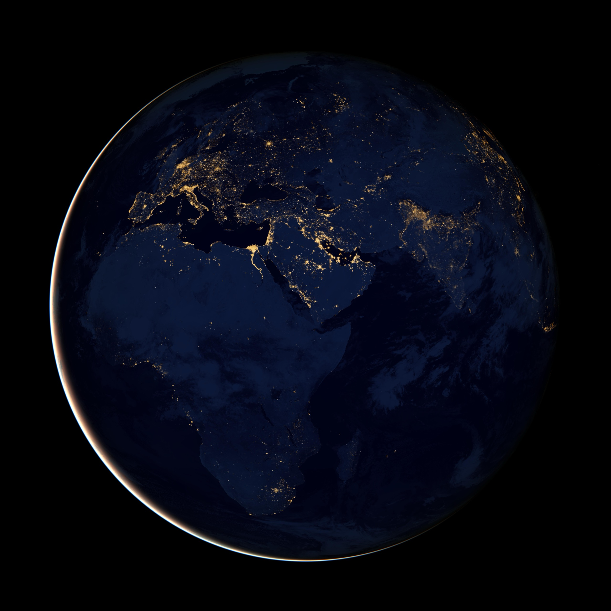

01 / Who we are
A science company whose laboratory is space.
In 1977, Dr. Om and Sara Bahethi founded SSAI on a single conviction: that knowledge has the power to transform lives. From a one‑person beginning it grew — organically, deliberately — into a partner that has stood beside NASA across more than 150 Earth and space science missions.
Today SSAI is a family‑led, woman‑owned company of scientists, engineers, and data analysts embedded in nearly every laboratory of NASA Goddard's Earth Science Division and at centers nationwide — still guided by a spirit of exploration, respect for our planet, and a desire to leave it better than we found it.
1977
Founded · Om & Sara Bahethi
48
Years partnering with NASA
7,000
Lives aided via NOAA SARSAT